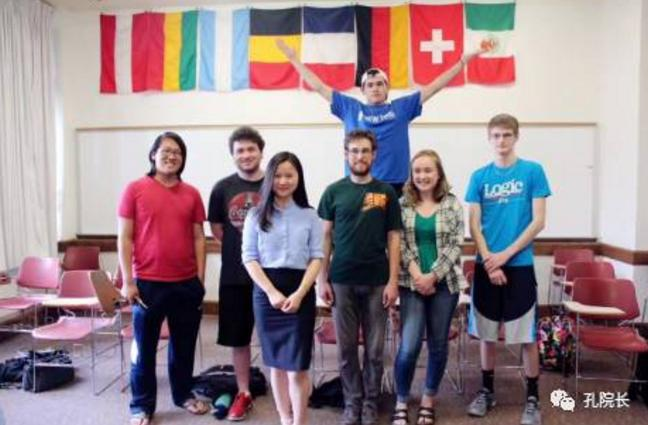

每日一篇——志愿者感悟/ 让自己成为学生走向中国的桥梁
 381
381
来源：原创 作者： 李冰星
来印第安纳波利斯接近一年的时间里，我被问到最多的问题，就是：“你喜欢这个城市吗？”每一次我都很坚定地回答：“喜欢。”喜欢这座城市的风景，喜欢在这里遇到的人，也喜欢在这里经历的一切。
印第对我来说，是来到美国的第一扇门，我从这扇门里，看到了和想象中不太一样的美国。
自从去年八月由国家汉办派遣，来到这里成为一名汉语教师志愿者，到如今结束任期，回到中国，短短九个月的时间，却让我对美国和自己的祖国都有了重新的认识，也对自己所从事的语言教学有了更深的理解和更远的追求，可以说，这段经历为我开启了人生的一段新篇章。
还记得刚来印地时的期待和忐忑。尽管来之前接受了一个多月的高密度培训，尽管我从属的印第安纳波利斯孔子学院与我就读的母校中山大学合作多年，尽管我在中国的美国朋友已经向我大致介绍了印第安纳州的文化氛围，但想到自己即将在Butler大学任教，面对一群几乎和自己同龄的大学学生，还要在一个素不相识的美国人家庭里居住一年，在到达住家门口，走下车前的那一刻，我还是不可避免地紧张了。
好在住家的一对老夫妻十分亲切，老太太虽然严格，却也细致体贴，我很快适应了住家温馨有爱的房子。Butler大学也给我留下了很好的印象，建筑古朴大方，绿植遍地，学生们友好且认真有礼。
但最开始的新奇劲过去以后，我马上就面临了各方面的问题，迎来了跨文化交际痛苦的磨合期。教学方面，除了每周四个班接近二十个课时的教学量以及全新教材带来的巨大备课量让我疲于应对，还要谨慎处理和新同事间的人事关系，以及学生们的各类诉求，同时要关照学生的课堂反应，根据教学效果调整教学方式。生活方面，由于饮食习惯的不同，我只能压抑自己对中餐的想念，极力配合住家，但还是因为习惯方面的误会，与住家起了几次小小的冲突，加之工作上的压力和对家人的思念，甚至一度崩溃落泪。
而正是处理和解决这些问题的过程，让我更深入地了解了我所身处的文化环境，也对中文教学有了更多的反思和感悟。
我慢慢适应了午饭只吃一个三明治或蔬菜沙拉，晚饭和住家一起做饭前祷告，也逐渐能接受并欣赏只有意面，牛排，三文鱼配米饭，烤鸡胸肉，蔬菜浓汤等西餐的生活，记住了住家多达二三十号人的大家庭里每个人的名字和生活趣事，和老太太老爷子一起去集市，一起拜访他们的朋友，一起去参加聚餐，也去他们孙辈重孙辈的学校看孩子们演出，去家人朋友家里庆祝他们人生的重要时刻，在感恩节，圣诞节，复活节这样举家团聚的节日里一起准备大餐，闲下来时听老太太倾诉家长里短，陪老爷子细数自己过去的人生经历。
学生们也给了我惊喜。刚上手的初级班，学生们从刚开始的畏难和不自信，经过多次的教学方法调整以后，基础越来越扎实，变得乐于开口练习，不再抱怨作业，课下还会积极地在微信上尝试着用中文和我聊天。高级班课上的气氛也活跃起来，学生们把生活中看到的中国文化现象，听到的与中国有关的消息，都拿来与我讨论，对中文和中国的关注点比以前多了不少。

与初级班学生的结课留念
当我能与这个崭新世界的人们融洽地交流，不再小心翼翼，害怕碰触到对方禁区以后，不禁反思，如果是一个学习中文的学生初到中国生活，怎样才能让适应的过程更容易一些呢？作为一个教语言的老师，又能为此做点儿什么？或者说，我的这段经历，能为我的教学提供什么灵感？
我一直没能得出一个明确的答案，直到有一天，学生问我：“老师，你来美国以后，觉得最不可思议，最疯狂的是什么？”我一时竟然找不出一个对我来说特别有冲击力的例子，但此前文化冲突所带来的痛苦和不适，却是切切实实的在我身上发生了。细想起来，我才发现，最开始让我困扰的，并不是两种文化间天差地别的不同，而是一些细枝末节上的差异，累积起来，才挑战了我原有的生活方式和思维模式，这也是为什么，文化冲突带来的痛苦极少会发生在短期旅游的人身上。但为什么我对那些细枝末节的小差异也印象模糊了呢？我想是因为经过了长期的磨合以后，我从心底里接受了这些差异，在我原有的世界观里，为这些差异找到了逻辑自洽的解释。
与高级班学生在室外上中文课
这两个过程，就如同来到一个新世界时的门与桥。当你打开一扇新世界的大门，最先看到和感受到的，是一群与你不一样的人，过着与你的世界里不一样的生活。而能让你真正踏上并走进这个新世界的桥梁，是每一个你深入交流过，理解过的人。当你理解了一个陌生群体里，一个个有血有肉的，独立而特别的个体，他们背后的故事和情感，你会发现，在最核心的情感和价值方面，世界大同。
生活方式的不同，大部分是由地理环境在长久的历史变迁中塑造，思维方式的差异，也由此而产生，但情感是共通的。比如正式庆祝生日，在中国是摆酒席，在我所在的地方，则是在家办生日派对。亲朋好友祝福的方式也不太一样，在中国是敬酒，送礼金，说些吉利话，而我所看到的美国，则是送小礼物，在主人准备的本子上写下与寿星共同的回忆，再当面说生日快乐。但在这其中，你能看到异曲同工之妙，体会到不同文化下的人们共同的情感。比如当一个老人过80岁生日时，无论中美，年长的来宾们都会和寿星谈起从前共同经历过的事情，感叹时光流逝之快。年轻人聚在一起，讨论工作，憧憬未来，顺便回应长辈的关心，孩子们则奔来跑去，嬉笑打闹，间或在父母的诱导下，跟寿星道喜。当宾客散尽后，一家人则围坐桌前，拆礼物，点礼金，细细记下来过的宾客及他们送来的东西，以期将来回报。置身这样的情境中，难免会有同一种文化移时换地之感。
在课堂上也是如此。学生们看似更活泼，自由，但也同样背负课业压力，对成绩格外上心。课堂发问遇到学生没把握的问题时，教室里同样的鸦雀无声，令人尴尬。一聊到将来的就业，也是和中国学生如出一辙的迷茫和愁苦，但提起恋爱和交友，也能激起同样的热情和兴致。
因此大部分的不同之处，若能稍加解释，在彼此的情感上找到共鸣，还是能相互理解的。比如学生在课堂上提起南海问题，西藏问题和台湾问题，我解释中国因为有过被瓜分的历史，所以对领土问题比较敏感以后，学生仍觉得中国人总说哪儿哪儿都是自己的，让他们难以理解，我说：“我们设想一下，如果美国当年内战时，北方军败了，南方军宣布他们不再属于美国，有的州甚至觉得他们应该属于墨西哥，你们会有什么感觉？”一个学生说：“反正我是不会让德州独立的。”我说：“那中国人的感觉和这种感觉是相似的，你们能理解吗？”学生们都若有所思起来。
文化交流最奇妙，也最动人的地方，在于发现有和自己完全不一样的人，而尽管有着种种不同，却仍然能相互理解，最终发现彼此的共同之处。就好像打开一扇新世界的大门，见识过种种光怪陆离之后，发现两个世界是相通的，只要你能找到并踏上那座联接两个世界的桥梁。
中文教学，更广泛一点来说，语言的教学，其实就是为学生打开这扇门，并帮助学生找到那座桥梁。前者为拓宽视野，是二语或多语言学习的魅力所在，后者则为世界观和人生观的塑造，能造福学生，改变世界。
我想，这将成为我在中文教学这条路上走下去的动力。
感谢在印第，在美国经历的一切，也感谢我遇到的所有人，你们成为了我的桥梁，我也会尽自己所能，成为学生们走向中国的桥梁。
作者简介：
李冰星，中山大学外国语学院汉语国际教育专业2015级硕士研究生，美国印第安纳波利斯孔子学院2016-2017年汉语教师志愿者。